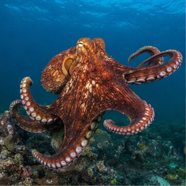
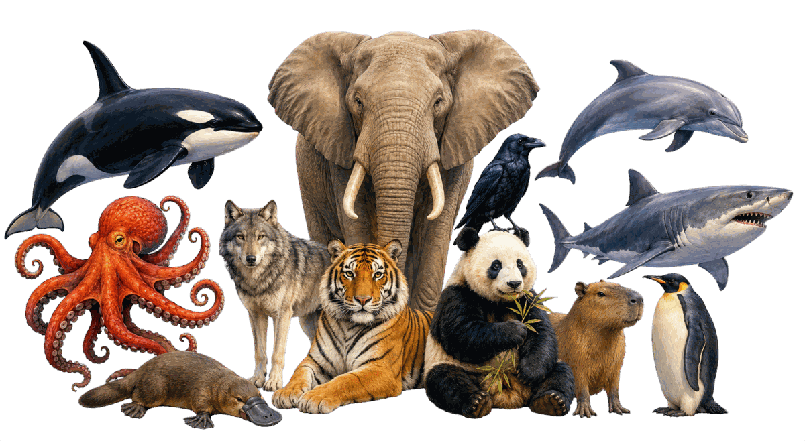

ANIMAL OF THE WEEK
Giant Pacific Octopus
Enteroctopus dofleini

Where it lives
What it eats
Why it amazes us
BRICE'S ANIMAL OF THE WEEK
Our planet is filled with intelligence, ingenuity and abilities that seem almost impossible. Meet a different remarkable animal every week.
Meet this week's animal
ANIMAL OF THE WEEK
Enteroctopus dofleini

THE FIRST 12
Select any animal to see its complete profile. The featured animal changes automatically each week.